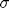
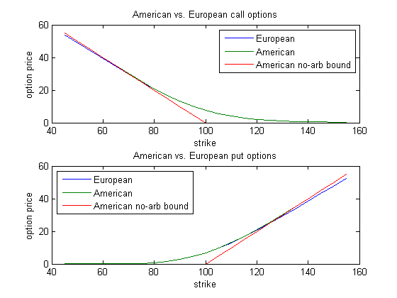

cf2american
Compute American option prices from characteristic function of asset return distribution. Part of the CFH Toolbox.
Syntax
V = CF2AMERICAN(CF,K,TAU,TYPE) [V D] = CF2AMERICAN(CF,K,TAU,TYPE) [V D] = CF2AMERICAN(CF,K,TAU,TYPE,AUX)
Given a characteristic function CF of an asset's return distribution, cf2american returns V, the prices of American options of the type='put' or 'type'=call' for the strike specified in the scalar K for a maturity TAU. D is the option delta.
Input Arguments
The characteristic function CF should expect the real arguments u, and return function values of the same size. The function must correspond to the return distribution of an i.i.d. return process, i.e. it must be from the class of Lévy models. Models such as the Heston model, or models with stochastic factor dynamics can not be solved via cf2american.
AUX is a structure containing optional parameters for the Fourier transform
- aux.NFFT denotes the number of points for FRFT evaluation, default 8192
- aux.NSTEP number of time steps until maturity, default 500
- aux.damp damping coefficient of the transform, default 2
- aux.xLimit the span of the log return range is 0+/-0.5*xLimit, default max(3,3*TAU)
Contents
Example 1: Kou's model
Kou's model assumes asymmetric double exponential jumps in addition to the diffusive risk . We will compare American put and call option prices for different strikes and maturity of nine months. As we have to hand the CF of a return distribution to cf2american, we initialize the spot asset with 1, i.e. log spot to 0.
S0 = 100;
K = [45:5:155]';
k = K/S0;
par.rf = 0.05;
par.q = 0.04;
par.x0 = 0;
par.sigma = 0.20;
par.lambda = 0.20;
par.pUp = 0.40;
par.mUp = 0.10;
par.mDown = -0.15;
tau = 0.75;
cf = @(u,tau) cflib(u,tau,par,'Kou');
As usual, we make sure that the characteristic function returns the zero bond price and the discounted forward value of the underlying:
[cf([0 -i],tau).' ; exp(-par.rf*tau) exp(-par.q*tau)];
We will now recover the American put and call options for the strikes in K:
for n = 1:length(K) PAmerican(n,:)= S0*cf2american(cf,k(n),tau,'Put'); CAmerican(n,:)= S0*cf2american(cf,k(n),tau,'Call'); end
In order to assess the early exercise premium, we also compute the European call option prices and recover the puts via put-call-parity:
CEuropean = S0*cf2call(@(u) cf(u,tau),struct('K',k));
PEuropean = CEuropean + K*cf(0,tau) - S0*cf(-i,tau);
Let us inspect the early exercise premium visually:
subplot(2,1,1); plot(K,[CEuropean,CAmerican],K,max(S0-K,0)); legend('European','American','American no-arb bound'); title('American vs. European call options'); xlabel('strike'),ylabel('option price'); subplot(2,1,2); plot(K,[PEuropean,PAmerican],K,max(K-S0,0)); legend('European','American','American no-arb bound','location','NorthWest'); title('American vs. European put options'); xlabel('strike'),ylabel('option price');